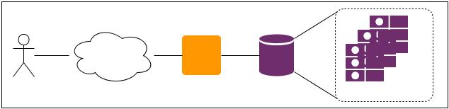
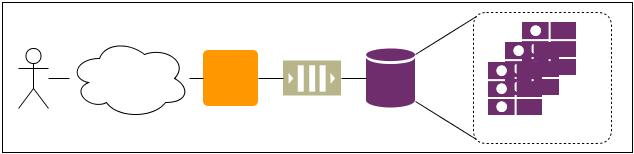
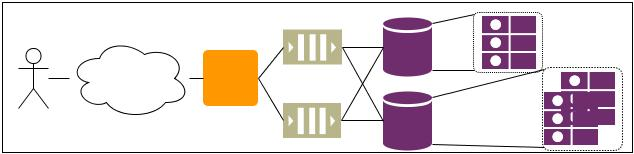
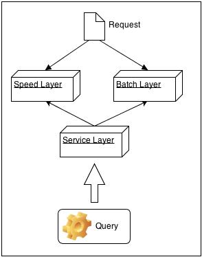

Storm!
TDC 2013 SP
Created by Luan Cestari / G+/ Facebook/ @BR_LuanCestari
Luan = lambda nerd: nerd*nerd
^^^ Piadinhas vvv

Agenda
- Lambda Architecture
- Storm
Pontos-chave
- Low latency
- Computação Distribuída e Paralela
Lambda Architecture
Historinha...
O que acontece no desenvolvimento das aplicacoes cujo o uso é crescente
O que acontece [0]
O que acontece [1]
O que acontece [last]
O que deu errado:
- Complexidade cada vez maior no desenvolvimento
- Fault-tolerance e High-Avalability são duvidosas
- Muita dificuldade de escalabilidade e limitada
Case:Facebook
- +1 Billion users
- +240 Billion photos
- +1 Trillion connections
- 22% of references of the Internet
- 2012: 300 milhões de uploads de imagens por dia
O que é Lambda Architecture
Batch Layer
Service Layer
Speed Layer
Putting it all together!
Storm
Características
- Simple, Flexível e com suporte a diversas linguagens
- Possui Fault-tolerance
- Fácilmente escalável
- Garantia de processamento
- Transação
- Rápido
THE END
BY Luan Cestari
Perguntas?
JBUG
https://community.jboss.org/groups/jbug-brasil